A selection of brand marks designed across hospitality, fashion, fintech, charity, retail and digital agencies — each one solving a different identity problem with the smallest possible amount of geometry.
The marks below come from real client engagements over the last few years — some part of full brand systems, some standalone identity work. Each one answers the same question in a different way: what's the smallest shape that still says the brand?
I work in a tight loop with the client — words, sketches, vectors, refinement — usually 3–5 rounds. Most of these went through 20–40 sketched options before landing. What you see is the survivor.
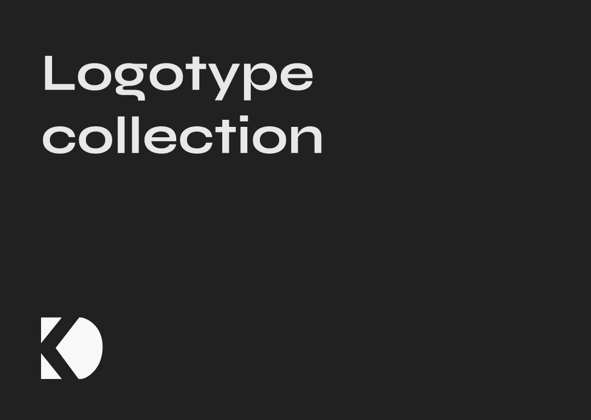
KD · Personal mark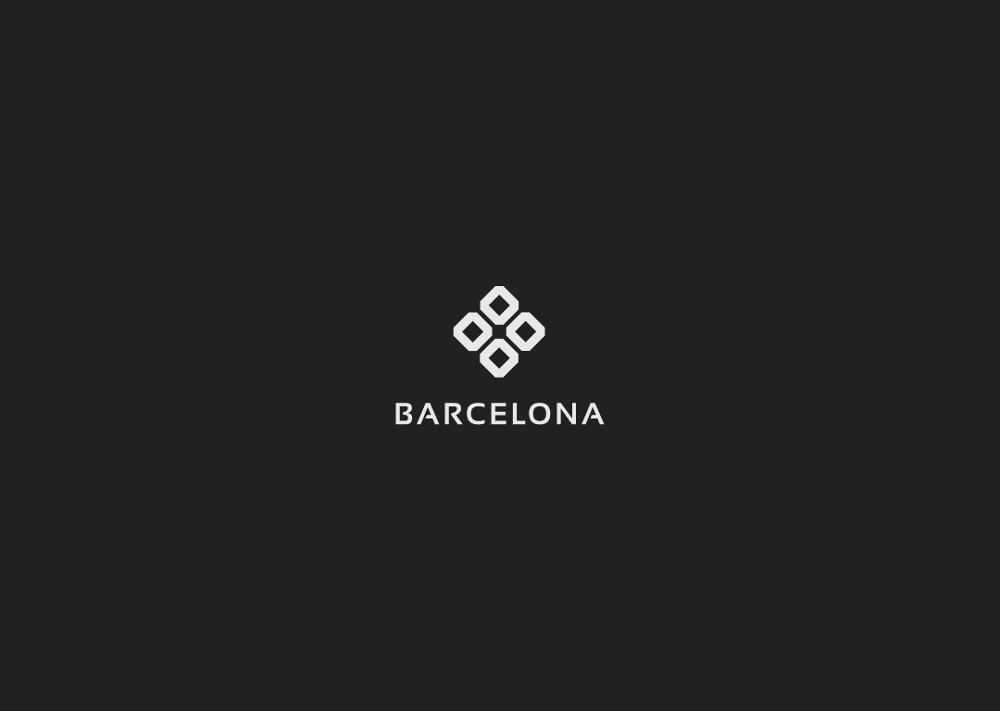
Barcelona · Fashion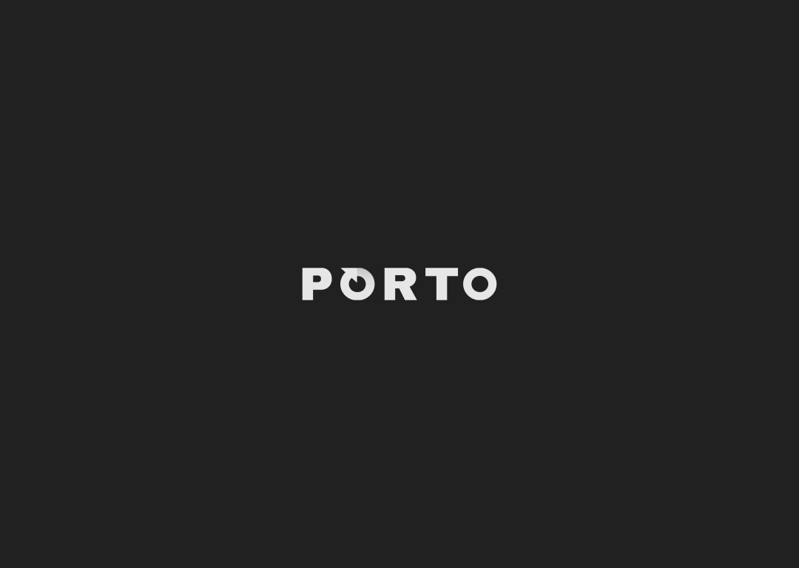
Porto · Fintech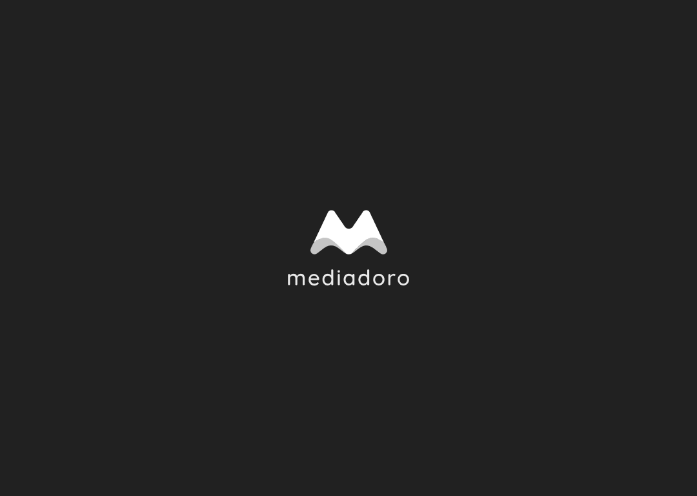
Brand mark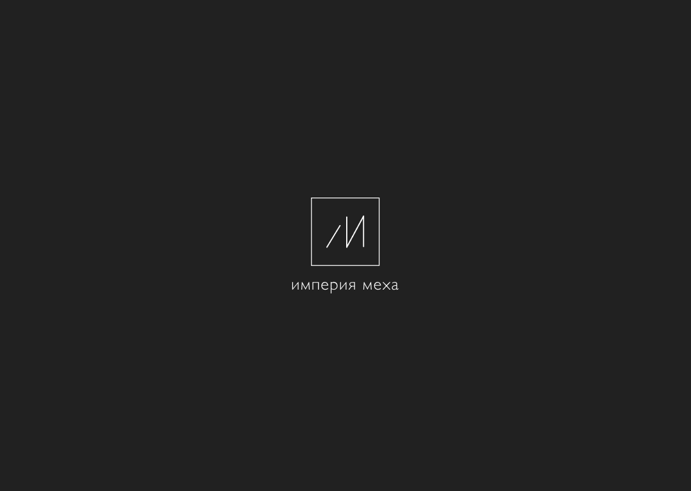
Імперія Меха · Retail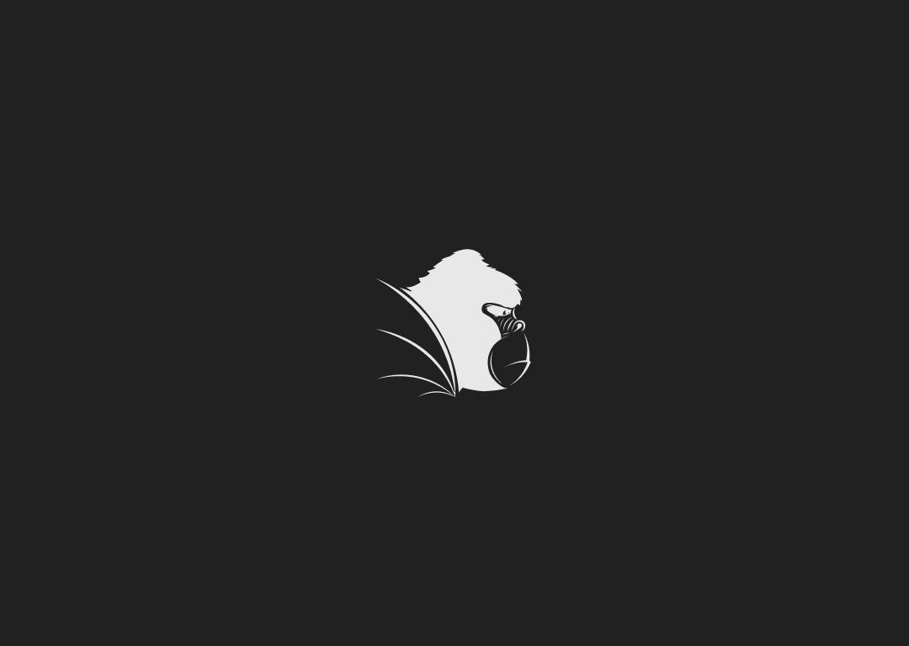
Gorilla · Emblem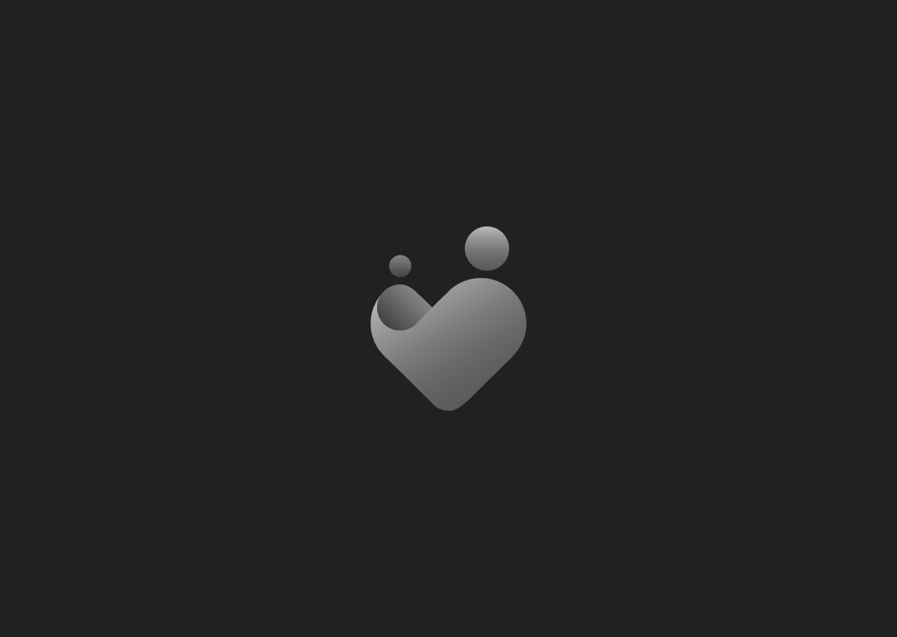
25 Digital · Agency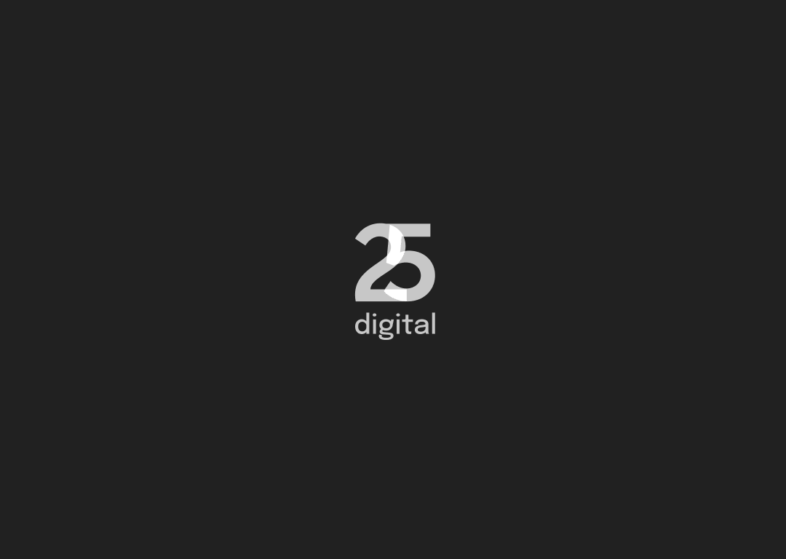
Charity mark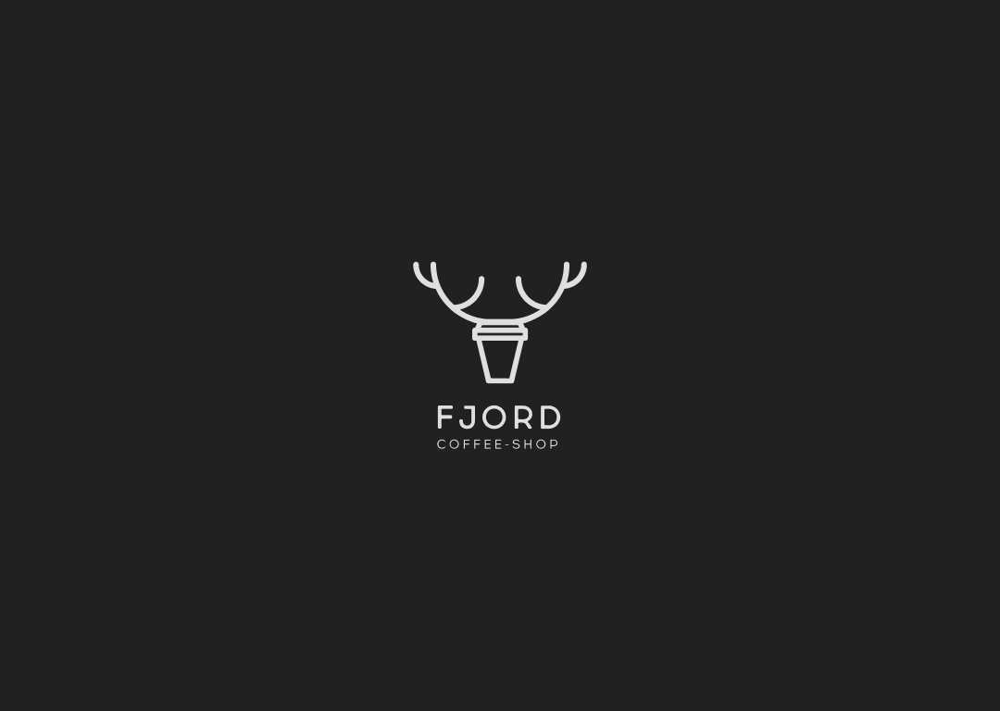
Fjord · Coffee Shop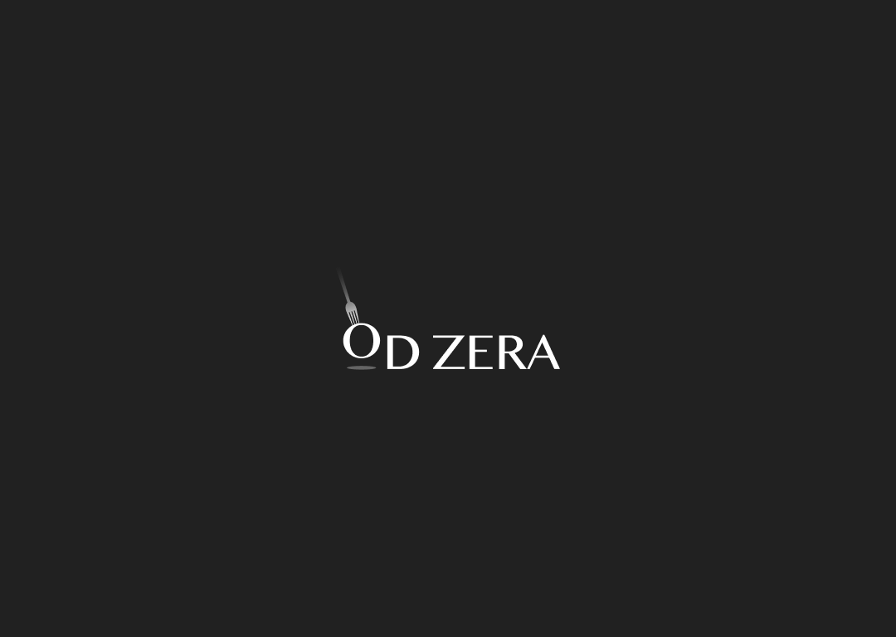
Od Zera · Restaurant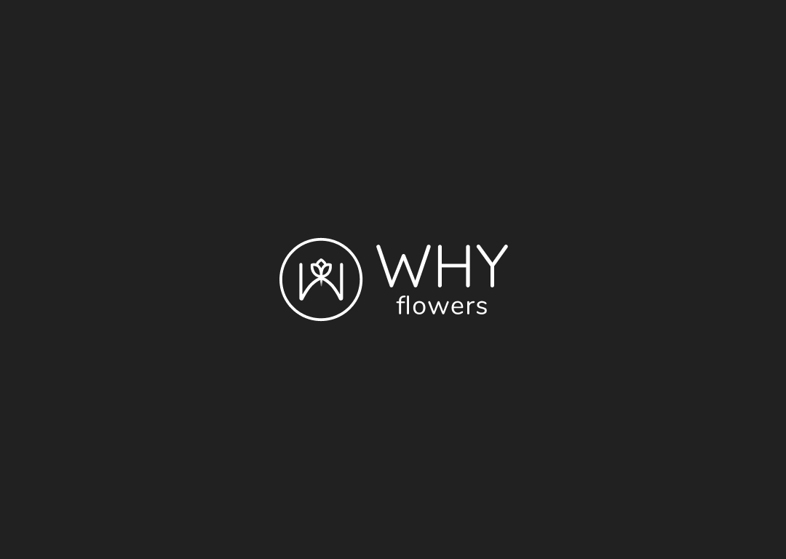
Orchard · Mascot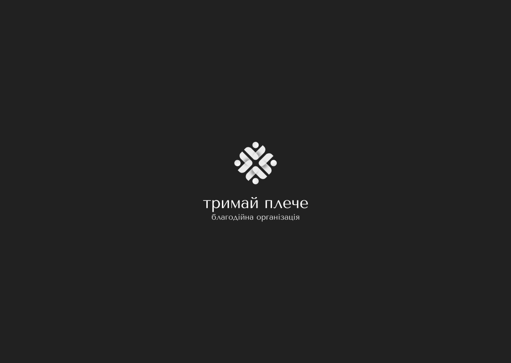
Тримай Плече · Charity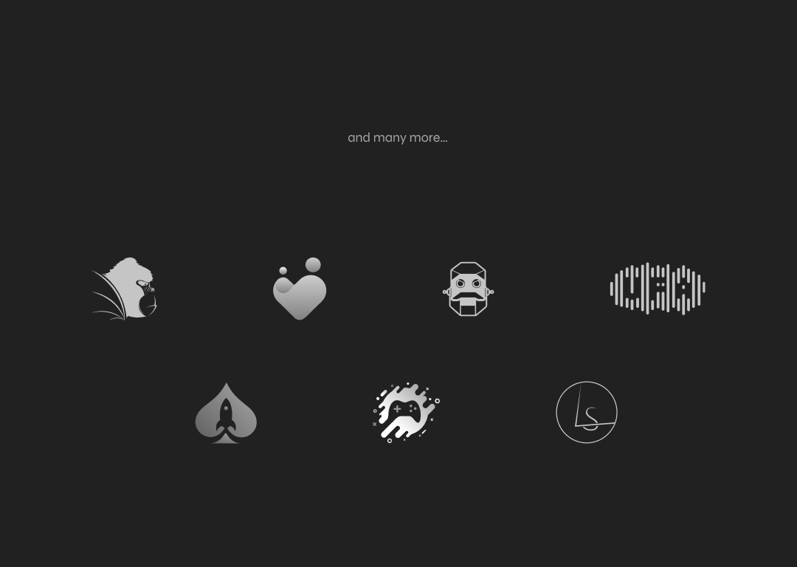
… and many moreEvery mark is designed in black-on-light before anything else. If it doesn't read as a silhouette, no amount of colour will save it later.
Every mark is reviewed at 16×16 px. If it loses its meaning at that size, it gets simplified — even if the simplification hurts.
No mark in this collection is doing two things at once. A coffee cup with antlers, a fork making an O, a heart of two people — one move, executed cleanly.
Selected from a broader catalogue of ~40 brand engagements across the last seven years.
Average number of sketched directions per mark before narrowing to 3 finalists. The mark you see is the survivor.
Hospitality, fashion, fintech, charity, retail, tech, wellness, lifestyle. Different brand registers, same construction discipline.
Doing this many marks side-by-side surfaces a useful lesson: the hardest moves are the simplest. The marks I'm proudest of are the ones I tried to make a hundred different ways before realising the original two-line sketch was already done.
The other lesson is about trust. A logo doesn't make a brand — a brand makes a logo. The best engagements were ones where the client trusted the simple option. The worst were ones where we added "one more thing" until the mark stopped working.